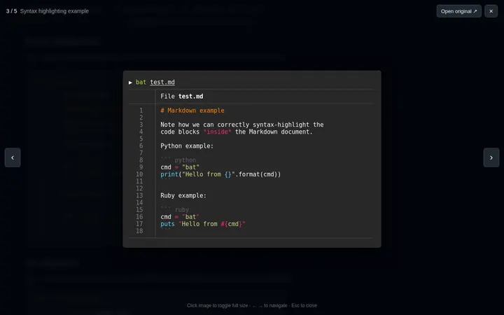
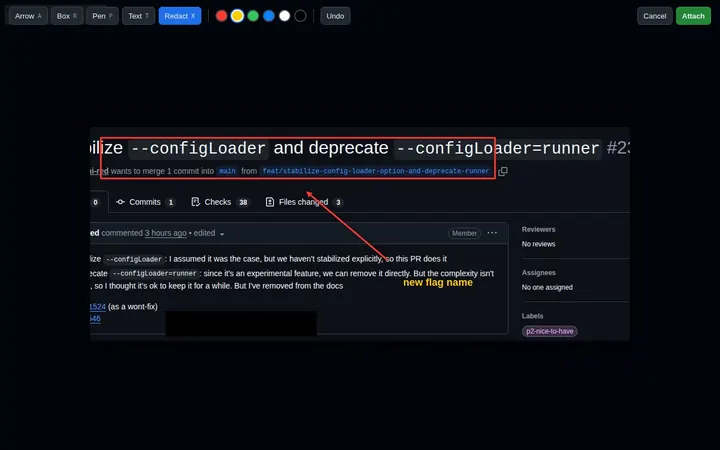
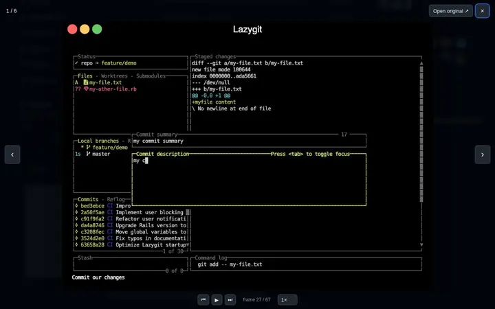
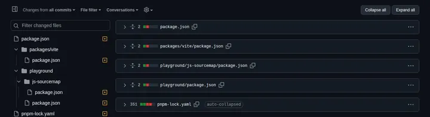
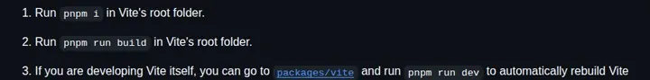
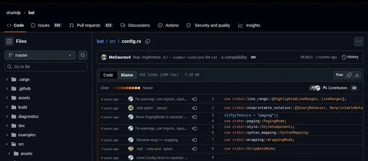
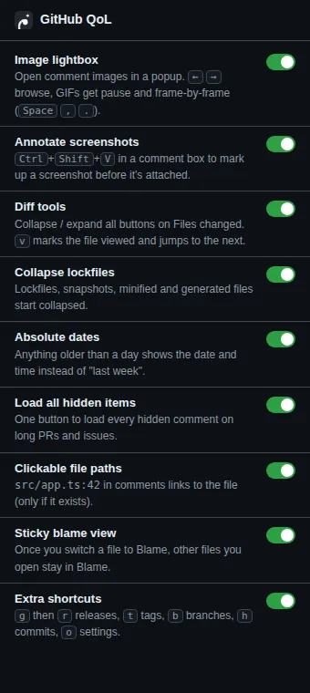

Image lightbox
Images in PRs, issues and READMEs open in place instead of a new tab. ← → browse every image on the page.
A Chrome extension with small fixes for reading and reviewing code on GitHub.

Images in PRs, issues and READMEs open in place instead of a new tab. ← → browse every image on the page.

CtrlShiftV in a comment box opens the screenshot in an editor first: arrows, boxes, text, redaction.

Pause GIFs, step through them frame by frame with , ., or slow them down.

Collapse or expand every file at once. v marks a file viewed and jumps to the next. Lockfiles start collapsed.
One button that loads every hidden comment on long PRs and issues.
Anything older than a day shows the date and time instead of “last week”.

src/app.ts:42 in a comment links to the file and line, if the file exists.

Switch one file to Blame and the next files you open stay in Blame.

g then r releases, t tags, b branches, h commits, o settings. Every feature has its own switch.
Open chrome://extensions and flip the switch in the top-right corner.
Click Load unpacked, pick the folder, and refresh any open GitHub tabs.